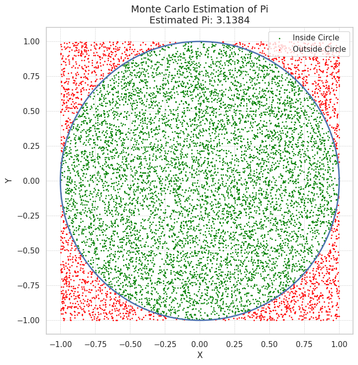

Problem 2
Estimating \(\pi\) Using Monte Carlo Methods
Motivation:
Monte Carlo simulations are a powerful class of computational techniques that use randomness to solve problems or estimate values. One of the most elegant applications of Monte Carlo methods is estimating the value of \(\pi\) through geometric probability. By randomly generating points and analyzing their positions relative to a geometric shape, we can approximate \(\pi\) in an intuitive and visually engaging way.
This problem connects fundamental concepts of probability, geometry, and numerical computation. It also provides a gateway to understanding how randomness can be harnessed to solve complex problems in physics, finance, and computer science. The Monte Carlo approach to \(\pi\) estimation highlights the versatility and simplicity of this method while offering practical insights into convergence rates and computational efficiency.
Part 1: Estimating \(\pi\) Using a Circle
1. Theoretical Foundation:
- The ratio of points inside a circle to the total number of points in a square can be used to estimate \(\pi\).
- A unit circle with radius \(r = 1\) is inscribed within a square with side length 2. The area of the circle is \(A_{\text{circle}} = \pi r^2\), which simplifies to \(\pi\) for \(r = 1\).
- The area of the square is \(A_{\text{square}} = 2 \times 2 = 4\).
- The ratio of points inside the circle to the total points can be used to approximate \(\pi\):
\(\pi = 4 \times \frac{N_{\text{inside}}}{N_{\text{total}}}\)
Where: - \(N_{\text{inside}}\) is the number of points inside the circle. - \(N_{\text{total}}\) is the total number of points generated in the square.
2. Simulation:
- Generate random points within a square with dimensions from -1 to 1 in both \(x\) and \(y\) directions.
- Check whether each point lies inside the unit circle by testing if:
\(x^2 + y^2 \leq 1\)
If true, the point is inside the circle.
3. Visualization:
- Create a plot showing the random points in the square.
- Points inside the circle will be shown in one color, and points outside will be in another color.
- Display the circle and square for clarity.
4. Analysis:
- Investigate how the accuracy of the estimate improves as the number of points increases.
- Discuss the convergence rate and computational considerations for this method.
Part 2: Estimating $ \pi $ Using Buffon’s Needle
1. Theoretical Foundation:
- The Buffon’s Needle problem involves dropping a needle of length \(L\) onto a plane with parallel lines spaced a distance \(D\) apart.
- The probability of the needle crossing a line depends on the angle of the needle and its distance to the nearest line.
- The formula for estimating \(\pi\) based on this probability is:
\(\pi = \frac{2L N_{\text{drops}}}{D N_{\text{crosses}}}\)
Where: - \(L\) is the length of the needle. - \(D\) is the distance between the parallel lines. - \(N_{\text{crosses}}\) is the number of times the needle crosses a line. - \(N_{\text{drops}}\) is the total number of needle drops.
2. Simulation:
- Simulate the random dropping of a needle onto a plane with parallel lines.
- For each drop, calculate the distance from the needle’s midpoint to the nearest line and the angle of the needle.
- Determine whether the needle crosses a line based on the geometric conditions.
3. Visualization:
- Create a graphical representation of the simulation.
- Show the positions of the needles and whether they cross a line or not.
4. Analysis:
- Explore how the number of needle drops affects the estimate’s accuracy.
- Compare the convergence rate of this method to the circle-based approach.

3. Python Code for Circle-Based Method:
import numpy as np
import matplotlib.pyplot as plt
# Function to estimate π using Monte Carlo method based on circle
def estimate_pi_circle(n_points):
# Generate random points (x, y) in the square [-1, 1] x [-1, 1]
x = np.random.uniform(-1, 1, n_points)
y = np.random.uniform(-1, 1, n_points)
# Calculate the distance of each point from the origin (x^2 + y^2)
distance_squared = x**2 + y**2
# Count the points inside the unit circle (x^2 + y^2 <= 1)
points_inside_circle = np.sum(distance_squared <= 1)
# Estimate π using the ratio of points inside the circle
# π = 4 * (points inside circle) / (total points)
pi_estimate = 4 * points_inside_circle / n_points
return pi_estimate, x, y, distance_squared <= 1
# Run the simulation for 10,000 points
n_points = 10000
pi_estimate, x, y, inside_circle = estimate_pi_circle(n_points)
# Visualize the points and the circle
plt.figure(figsize=(6,6))
plt.scatter(x[inside_circle], y[inside_circle], color='green', s=1, label='Inside Circle')
plt.scatter(x[~inside_circle], y[~inside_circle], color='red', s=1, label='Outside Circle')
plt.gca().set_aspect('equal', adjustable='box')
plt.title(f"Monte Carlo Estimation of $\\pi$\nEstimated $\\pi$: {pi_estimate:.4f}")
plt.xlabel('X')
plt.ylabel('Y')
plt.legend()
plt.grid(True)
plt.show()
Function to simulate Buffon's Needle
def estimate_pi_buffon(needle_length, line_distance, n_drops): crosses = 0 for _ in range(n_drops): # Randomly generate the distance from the needle's midpoint to the nearest line dist_to_line = np.random.uniform(0, line_distance / 2)
# Randomly generate the angle of the needle (uniformly between 0 and π/2)
angle = np.random.uniform(0, np.pi / 2)
# Check if the needle crosses the line
if dist_to_line <= (needle_length / 2) * np.sin(angle):
crosses += 1
# Estimate π using Buffon's Needle formula
pi_estimate = (2 * needle_length * n_drops) / (line_distance * crosses)
return pi_estimate
Run the simulation for Buffon's Needle
needle_length = 1 # length of the needle (L) line_distance = 2 # distance between parallel lines (D) n_drops = 10000 # number of needle drops (N_drops)
Estimate π using Buffon's Needle method
pi_estimate_buffon = estimate_pi_buffon(needle_length, line_distance, n_drops) print(f"Estimated π using Buffon's Needle: {pi_estimate_buffon:.4f}")